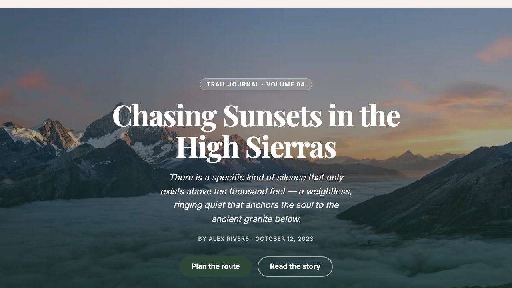
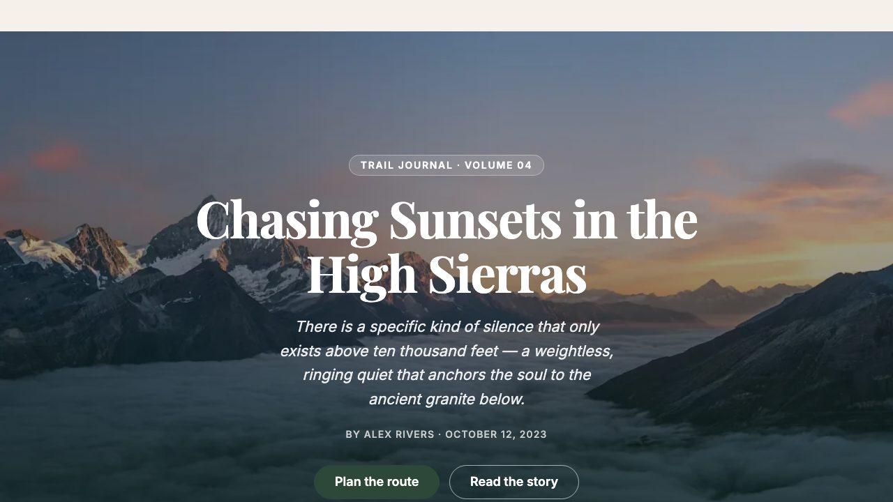
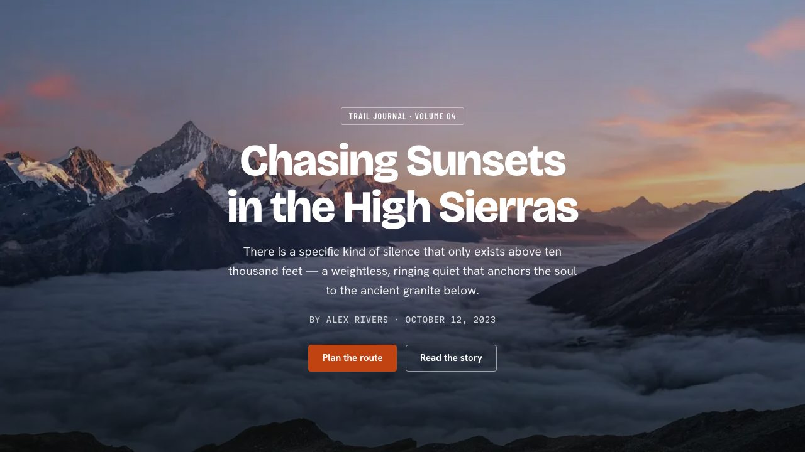
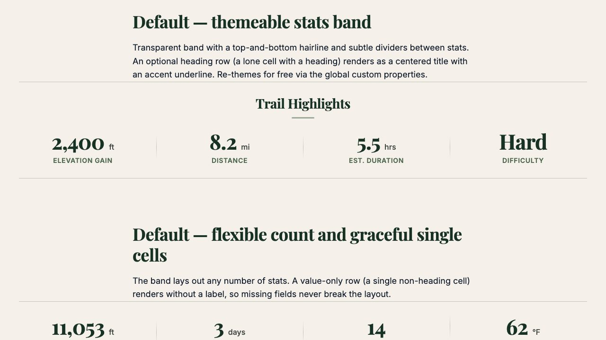
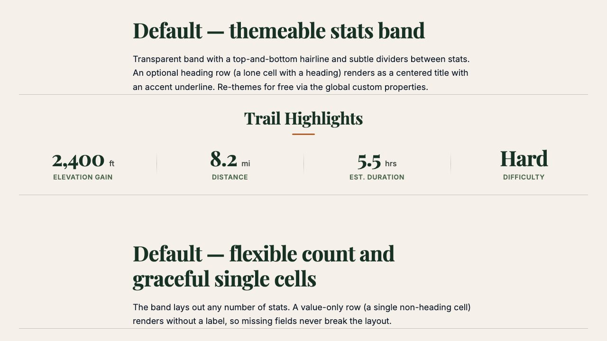
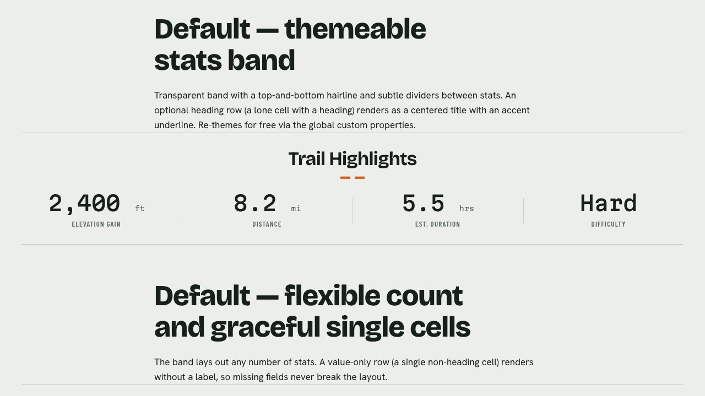
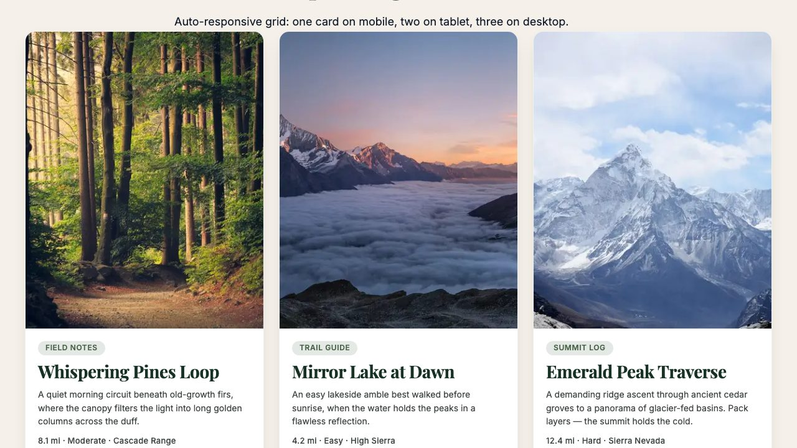
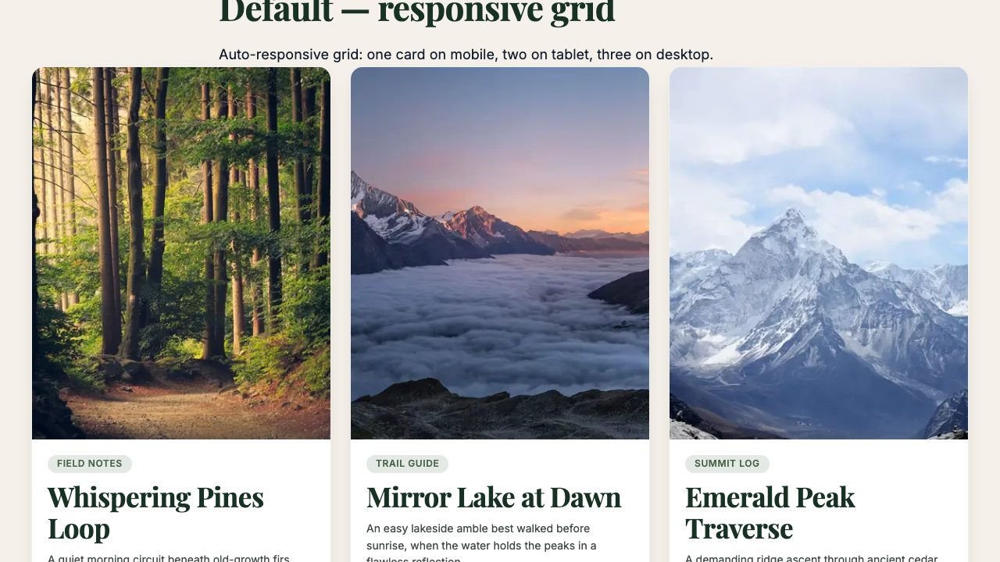
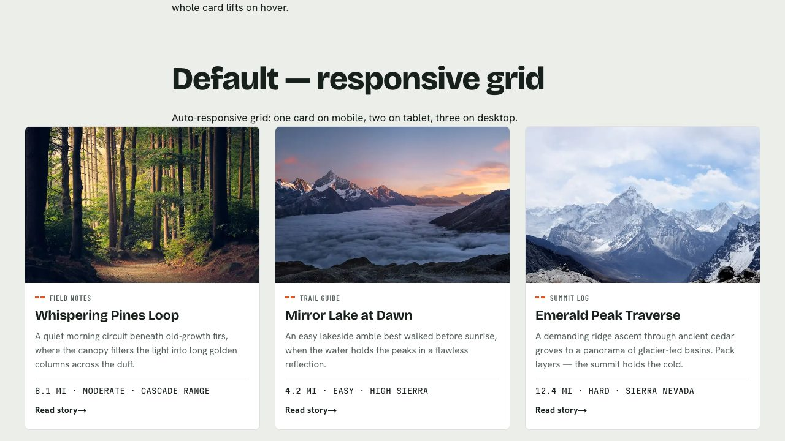
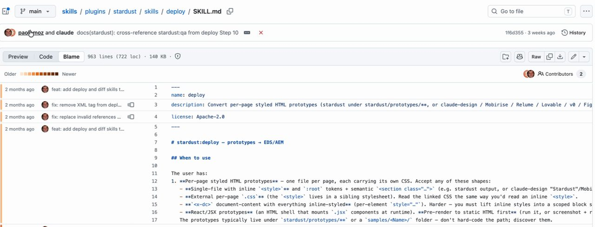

The six parts below follow the video. Each one links to its moment in the video if you'd rather watch.
First published as a LinkedIn video on August 9, 2026. Rewritten for this site in October 2026. Skill: adobe/skills at cbaeec4, the last commit on main before I recorded, with the Stardust plugin at version 0.18.1. My run: adapt-to-2026-demo, branches feature/star-dust (V1) and feature/star-dust-v2 (V2).
1. Stardust is a skill, not a product
Adobe's own Stardust pages show slides with a before and an after, a direction step and four steps. Reading them as a technical architect, only the four steps told me how it works.
My baseline is Google Stitch. In an earlier video I had Stitch generate a whole block library, every block and its variations, and built it in EDS.
Reading through Adobe's documentation, I quickly realized Stardust is skill-based. Its README calls it "a Claude Code plugin that drives a guided redesign of an existing website", and it lives in plugins/stardust in the same public repo as Adobe's other agent skills. If you've watched how quickly software as a service might be replaced by skills as a service, or end up complementing it, this fits right in. For anyone less familiar: skills are consistent instructions that help AI do things the same way every time. They're like code for AI agents.
Watch this part0:17 What is Stardust?1:35 Skill-based
2. impeccable does the design, so read it first
One thing Stardust's documentation keeps mentioning is that it needs impeccable to run, and that got me interested in what Stardust actually is. The README is direct about it: impeccable is a hard dependency with no fallbacks, and Stardust checks for it on every run and stops if it's missing.
impeccable is a UX design skill library with a good mission. A lot of AI-generated design looks generic, and impeccable exists to fix that. On camera I said it had 48,000 GitHub stars; the GitHub API said 57,420 that day, so it was climbing fast. It's a set of skills you install, invoke and use from the command line.
Stardust builds on top of it. Its main skill reads impeccable's command registry, 23 commands at the time, as the source of truth, and hands the per-page design craft (typography, spacing, color, layout, motion) to impeccable. So if you're going to use Stardust, read all the impeccable material first. impeccable is what's actually doing the design.
Watch this part2:24 impeccable first
3. Four steps, with a human gate before any EDS code
Stardust follows four steps. It extracts the current site, crawling it to capture the current design and its thinking, along with what the user wants. It sets a direction, which is where impeccable really comes in. It prototypes the redesign as static HTML, page by page. And then it migrates to Adobe EDS. In the skill files, the four core steps are platform-agnostic, and a second set of skills does the EDS delivery: deploy turns one page into blocks and content, and rollout does the whole site.
The cool thing to note is that it paused. When it gave me the prototypes, it stopped before building anything in EDS. When we think about agentic workflows and agent gates, this is super important. AI needs to pause and give humans and teams a chance to react to the work and refine it before it makes it into EDS.
The skill tracks this per page in stardust/state.json. A page moves one way through five states, and only one of them is set by a person: approved means "the user explicitly approved the prototype". There is a hands-off mode you can opt into, where the agent grants approval itself, but only after its quality gates pass, and it records that as approvedBy: "hands-off" so nobody mistakes it for a person.
Below is a simplified model of those rules, loaded with four pages from the real state file of my V2 run. Pick a page, then press the steps in order. It shows the one thing that matters here: Migrate refuses any page until a person has approved its prototype, unless you switch on hands-off mode.
1. Pick a page. Status as my V2 run left it in state.json.
Eight more pages (columns, quote, gallery, table, accordion, newsletter, author-bio and a typography template) were still extracted, like stats.
- extractedset by the extract step
- directedset by the direction step
- prototypedset by the prototype step
- approvedset by a person (or hands-off mode)
- migratedset by the migrate step
2. Press the steps in order.
The stats page is still extracted, so Migrate refuses it. A page moves forward one state at a time, and a person has to approve its prototype before it can be migrated.
{
"slug": "ai-content-blocks-stats",
"path": "/ai-content/blocks/stats",
"status": "extracted",
"prototypePath": null,
"migratedPath": null
}
My own V2 run shows the gate working one level up too. The direction step proposed a world it called Alpine Signal: modern expedition and cartographic, a trail-blaze orange accent, topographic contour lines. The direction file stayed in a proposed state until I answered two questions it asked me, about the background colors and how much motion to use. Its header still records "APPROVED 2026-08-09 (Jack: hybrid three-theme ground + subtle motion register)".
Watch this part3:24 The four steps7:00 The human gate
4. Three real blocks: Google Stitch against two Stardust runs
I ran this on an Experience Workspace-enabled DA.live instance, the block library for my adaptTo() demo site, a hiking journal. We'll look at three blocks: cards, hero and stats. Version 0 is what Google Stitch generated earlier, on the main branch. To be fair to Stitch, not all of it is Stitch's doing: green text on a green photo is terrible, but Stitch couldn't predict which image an author would put there.
For V1, I asked the AI to explain to me what impeccable is and what Stardust is before anything else. That does two things. I understand it better as a human, and the AI reads it into its main context first, a bit like chain prompting. For the record, this ran on Claude Fable 5 with extra thinking, not max thinking but close, as state of the art as you can get at the time of recording. Then I gave it the most vague prompt I could: these are my blocks, this is my block library, figure out what they do, let's redesign it and see how it goes.
For V2, same trick, with some of V1 carried over, but I asked for something bolder and more modern. Again, I'm not a designer, so I had no idea what I was saying. The prompt in the run's journal was to "do a bold new redesign, understanding the objective of a wilderness hiking thing and go for a drastic and better modern design for hiking". All of it took two, three, four, five prompts using the Stardust skills.
Below, pick a block and switch between its three versions. All three branches render the same DA content, so what changes from one version to the next is only the code.









main, feature-star-dust and feature-star-dust-v2. Hover effects don't show in a screenshot. Quotes are my verdicts from the video.So, is one better? I'm not a taste guy. If I had taste I'd probably say they're all about the same. And it isn't a fair test of Stitch against impeccable plus Stardust: Stitch had one chance to one-shot each block, while Stardust got to improve on what was already there. It certainly has potential, though. It clearly understood what EDS is about and built me some nice hero blocks.
Watch this part4:07 The setup5:01 V1, the vague prompt6:13 V2, the bolder prompt8:57 Comparing the blocks
5. The deploy skill builds the prototypes into EDS in one shot
This brings it back to Adobe Experience Manager. Adobe has clearly invested here, and the crown jewel for me is one file: skills/deploy/SKILL.md, 963 lines at that commit. It reads like a compressed version of a lot of Adobe's EDS skills in one large skill file, and it can take static HTML from impeccable and turn it into EDS. Its description says it converts styled per-page HTML prototypes into EDS blocks and content pages and deploys them through DA, with each prototype section becoming one block and its CSS scoped under the block class. If I had to name the MVP of Stardust, it would be this file. All 22 commits to it before my recording came from Paolo Mottadelli.

My V2 run added one constraint that matters to anyone on EDS. DA content is shared across branches, so the redesign had to be a code-only reskin: no changes to block contracts or authored content, only blocks/, styles/ and script decoration. According to the run's journal, it swapped in new self-hosted fonts, re-pointed the tokens in styles.css under the boilerplate's existing theme names, and rewrote all 12 block and shell stylesheets, then checked 12 pages at three viewports for console errors, broken images and overflow. That covered all 12 blocks, including the nine pages that never got a prototype of their own.
It also raised a finding on its own. The authored DA copy on 10 of the 12 pages still described the old design by name, its fonts and its green scrims, and now contradicted what rendered. The code changed and the content didn't, which is exactly what content and code separation is supposed to allow. A person still has to do that content pass.
Watch this part12:47 The crown jewel
6. How Stardust differs from Google Stitch
Can Google Stitch design? Yes. Can Stardust design? Also yes. For me, the biggest differences are these:
- It uses impeccable, which makes it comparable to Google's design capability.
- I pick the model. I ran it with Fable and extra thinking, instead of the Gemini Flash model baked into Stitch.
- It understands Adobe, since it's an Adobe skill. It did the EDS implementation in one shot.
- All of it took two to five prompts, with a lot of tokens and the newest model with extra thinking behind them.
Yes, I could have refined the design further; I didn't really review it. And there are prototypes and steps I didn't have time to show, but the step-by-step flow blends well with the human gates.
Understand how impeccable works before you use Stardust, because that's what's actually doing the design. Like a good consultant, Adobe worked out what matters to a client who wants to do this. It broke the job into four separate steps and, intentionally or not, put the human gates where Adobe thinks they belong, around design review and prototyping. Once all that feels good, Stardust builds it into Adobe EDS in one shot.
I'm looking forward to seeing how Stardust evolves.
Watch this part11:39 Can both design?13:32 Wrap-up